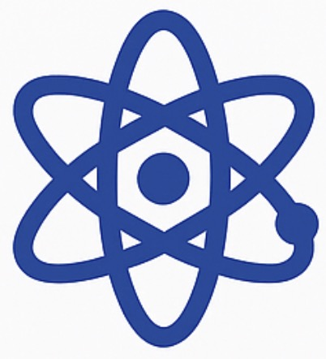

什么是知识图谱？
什么是知识图谱？
在AI时代，传统的文档式知识库已难以满足企业快速决策与智能问答的需求。知识图谱通过实体、属性与关系的结构化表示，使企业能高效整合信息、理解语义、驱动智能Agent，成为构建企业级AI系统的关键支撑。

 我们的构建流程
我们的构建流程
- 数据采集与清洗：整合结构化与非结构化数据源。
- 实体识别与关系抽取：从文本中挖掘关键实体及其关系。
- 关系对齐：规范化命名与语义连接。
- 图数据库构建：结构化知识图谱入图如 Neo4j。
- 可视化与分析：实现关系图谱可视化与关系分析。
- 语义问答系统：结合大模型问答引擎实现语义化问答能力。
 实际演示效果
我们已在多个实战项目中构建数千级实体与关系的知识图谱，可进行关键词查询、上下游推理、结构可视化等操作。
同时支持对接企业内部搜索引擎，实现自动摘要、智能问答、图谱导航等功能。
我们的技术优势
- 自研中文大模型适配，适配多类行业数据
- 支持主流图数据库存储（Neo4j、ArangoDB 等）
- 具备企业级知识图谱构建 + 知识补全 + 文档生成能力
企业应用场景
- 内部知识检索系统
- 专家辅助决策系统
- 智能客服与RAG问答
- 文档自动生成与归档系统